(日記とか言うモノ)
massangeanaさんのところの古いニュースを見ていたらこんな記述が。
(2000-05-24)
* 新エピソードは来週か? カナダではすでに放送したらしい。
昔から新エピソードはカナダの方が先にやるってのは伝統なのか？
米ニックのサイトが模様替え。
グッズとか見てみたけどティーンエイジロボットのものはなかった。インベーダージムはあったが、なんかショボイ。
現在パワパフ着ぐるみの登場記録を調査中。もしかしたら過去のデータを解析することによって、次の登場場所を推測でくるのではないかと、思い至ったもので。
・・・ほとんどが東京でのイベント。
ただ、去年夏くらいからパワパフショーは府中、所沢、町田と都心から離れた場所で行われていて、これをマップに記してゆくと・・・
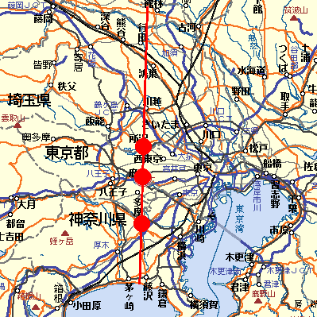
去年夏からのパワパフショー出現地図。
このラインにはなにか法則性が！？
だとすると次は「川越」「鴻巣」、もしくは「藤沢」「茅ヶ崎」か？あ、「多摩」ってこともあるな。
開催日はゴールデンウィークあたりが濃厚か。
これで次が千葉とかだったら全然ダメですが（笑）
PpGショーの動画を何回も見返してニヤニヤしてます。まだ興奮さめやらず。
レビューの動画は最初は単純にリンクしてただけだったんだけど、ポップアップ式のHTMLに埋め込む形にしました。
Macだと単独ファイルでもストリーミングが効くようなのですが、winだと埋め込んでパラメータ設定してやらないとダメなことに気が付いたからです。いろいろあるもんだ。
改めて使ってみるとQuickTimeって優れたフォーマットだよなあ。
今パソコンでの動画といえば、DivXコーデックが登場したあたりからAVIが全盛ですが、このAVIってイマイチしょぼいフォーマットなんですよね。まあ、枯れているぶんだけ、扱うツールが多くていじりやすいんですが、それ自体はなんだか貧弱なフォーマットなんですよ。
最近では映像部分は映像部分で圧縮形式を選べるて格納できるので、この手の動画フォーマットは、映像や音をおさめておく「箱」として扱われ、「コンテナ」と呼ばれることが多いようです。
で、コンテナとしてAVIを見ると、映像と音声が一つずつしか納められない。
動画ってそんなもの、とは思わんでいただきたい。DVDのように音声の言語切り替えや字幕の切り替えとかほしいじゃないですか。
そこで最近OGMとかMVKとかいうコンテナが開発されてきた。
これらのコンテナは音声が複数格納できて、字幕（クローズドキャプション）も埋め込める。対応しているプレイヤーがあれば、DVDのように日本語音声と英語音声など複数音を格納できて任意に切り替えられる。すばらしい！カートゥーンや洋ドラとかをキャプチャーしてPCで管理するならコレですよ！
でも最近のものなので、扱えるツールがあんまりないんだよなあ。当然ながら一般への知名度もかなり低い。「DVDコピーしまくり！」とか息巻いてる雑誌とかみても、アホみたいにDviXでAVIとかそんなパターンばかり。うーむ。やっぱり普通に日本のアニメとかTV番組とかキャプってる方々にはそんなに必要性を感じないってことでしょうかね。
必死こいてMVKで日本語音声、英語音声切り替えの出来る動画を作ってみた。なかなかいい感じ。
そこでQuickTime。実はこれ、こんなものが出る数年前から、20世紀のころから、とっくにマルチオーディオ、テキストトラック装備だったんだよね。しかも最近のはFlashトラックも組み込めるからDVDのようにメニューを作れたり、スクリプトを使っていろいろ制御できたりする。DviXもコーデックとして使えるからパフォーマンスも問題ない。しかもストリーミング仕様にもできる。
なんてすばらしいんだ！
でも、その手の動画関係ではほとんど言及されることはないですな。
やはりこれは開発がappleってとこが大きいんだよねえ。今じゃwin版もあるし、Macだけのフォーマットじゃないにもかかわらず。オープンソースでもないから、そのマルチトラックだのなんだとと素晴らしい機能を扱えるツールがほとんどないんですよ。だから素晴らしい機能も絵に書いた餅のままで腐ってゆくだけ。今の時代、上からのおしきせだけじゃ発展しないものなんだなと、痛切に思った。
と、言うわけで、カートゥーンも鼠会社のようにファン活動をちっちぇえ理屈で規制しないでいてほしい。（ムリヤリな終わり方）
鉄は熱いうちに打て。ということで、内容忘れいないうちに、PpGショーのレビューを書きました。記憶力はかなりない方なので、外部記憶装置に早めに記録しておかないとダメなのです。私の場合。
パワパフのタイトル全部言えといわれても多分言えません。クイズとか正解がわかっていながらもそれが口から出てこないタイプですね。
レビューの動画はQuickTimeになってます。デジカメの動画がQuickTimeだからです。最初はMpeg1にでもしようかと思ったんだけど、QuickTimeから他のフォーマットに変換するのはけっこうめんどうなので、結局そのまま。そのぶんQuickTimeでいくと決めたらラクチンでした。Mpeg4にしようかとも思ったけど、その場合QuickTimeの6以上が必須になってくるのでやめました。でも、そのかわりストリーミング仕様にしたので、それなりにストレスなく見れるはずです。サイズだけを考えればReal形式がかなりいいんだけど、個人的に好きじゃないので。
いやあ、最近動画フォーマットにちょっと凝ってるんですよ。今一番の注目はMVKなんですが、まだまだマイナーですな。そもそもDivXやXvidすら一般の人にはマイナーな存在ですからねえ。
あー、それにしてもカメ吉さんはどこにいたんだろう？
東京国際アニメフェア2004 でアニメアワードが決定した模様。これが日本におけるアニー賞ともいえるものだろうか？
アニメーションアワードは ガンダムSEED・・・・・ いや、見たこと無いからなんとも言えませんが。
とりあえす、カートゥーン的には
海外劇場部門：リロ・アンド・スティッチ
海外ではファンディング・ニモがぶっちぎりで受賞しまくっていたのに、日本だとリロ。やっぱり3Dはイマイチ日本にはなじまないのか。（ディズニーから独立したピクサーへの・・へんな裏読みはやめとこう）
声優賞に朴さん。ポーラママ一躍トップスターに。つーかハガレン人気でしょうな。
海外劇場部門はあっても、海外作品部門がないようですね。国際といってるわりにはこの程度。まあ劇場公開ものでもない限り審査できる人がいないってことかも。
関係ないけど、「無人惑星サヴァイヴ」の37話と39話は絶対見ようと思った。
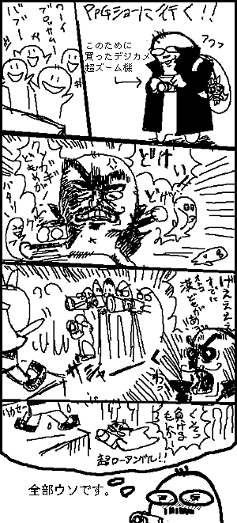
デジカメ買ったのだけホント。
子供おしわけて乗り込む勇気はなかったため、遠くからでもいいように光学12倍超ズームデジカメを買ったのですが、普通に前のほうで見れました。意味なかったですね。しかし、悔いなし。
観客が多かったのか少なかったのか比較対象を知らないのでなんともいえませんが、晴れていたので場所自体はけっこうにぎわっていました。家族づれが多かったなあ。けっこう子供達は喜んでいたようです。（もちろん私も）
おおきいお友達らしき方々は、ちらほら程度。
エヴァラの若鶏さんも来ていて、お会いしました。私は一人コーフンしていて、声かけられるまで、全然気が付きませんでしたが（笑）
てなわけで、写真も撮ったので、そのうちレビューでも書きます。
そうそう、こんなものをゲットしました。
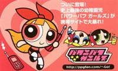
ガールズモバイルサイトの紹介ミニチラシ。
「東京国際アニメフェア2004」は国際というわりには、さほど国際でもなかったようです。
パワパフも、まあ普通に紹介されてたっぽい。
それよか、いよいよ新作日本放送までのカウントダウンの足音が聞こえてきたようですな。
長かった・・・そりゃ確かにクリスマススペシャルやら、アンダーグラウンドはあったけど、やはりコレですよ。うふふふふ。
でも、新作は本当に面白いんだろうか？ちょっぴり不安になってきた。パワパフファンはともかく、デクスターファンは第三シーズンの悪夢とかあるじゃないですか。あと、カートゥーンものってシリーズが進むにつれてだんだんショボくなるってパターンがあるじゃないですか。だ、だ、大丈夫かなあ。
とりあえず、日本語制作スタッフはなんとか粘って、これから米国で放送されるダイナモ話までやってるれることを期待してます。もう、ココまで来たら、もうちょっとくらいは待ちますから。
どのみち、新作は地上波でやることも、DVD化することも現時点では可能性が限りなく薄いから、CSなりケーブルなりに加入検討することをオススメする。ティーンエイジロボットも地上波ではやらないしね。
そうそう、明日はティーンエイジロボットのパイロット版ですよ。オーイェイ！カートゥーンの一番最後の短編（6分くらいか）だから、短気おこさずに最後まで見るよーに。
さて、明日のために仕事を進められるだけ進めておきますか。南町田グランベリーモール3時ころに出没予定。もし同じ時間に見にゆく人がいたらお気楽に声かけてください。多分子供ばかりの中で浮いていて寂しい思いしてるから。黒トレンチコートにブロッサム人形を下げてると思います。
話はかわってムチャルチャ。
スノーピーを見ていると、ついつい田中圭一の「局部くん」って漫画を思い出してしまします。 （「神罰」に収録されてますが、下ネタだらけの極めて下品な漫画なんでチューいせよ。）
昼に原宿にいく用事があったので、ブリスターによってきました。
今月はPpGコミックはなぜか第三週ではなく、第四週に発売なのです。
TeenTitans Go!と同じ週になったので、まとめて買えて楽だった。
TTといえば、バンダイ製のTTミニフィギュアセットが入荷してました。
ブリスターパックが漫画になっているのです。
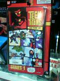
これはおもしろい！と思ったけど、肝心のフィギュアが・・・・
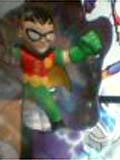ロビン・・・
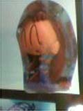チビ スター
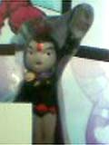このレイヴンは酷すぎる・・・
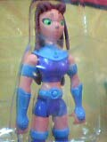ついでに、アクションフィギュアのスターファイヤー。これもかなり酷い・・・
近くにあるスポーンとかスターウオーズとか指輪物語とかのデキにいいやつに囲まれてただけに、ひどさが目立ちすぎ。さすがに買えなかったDeath。
それにしてもセットのチョイスがちょっとどーかと思った。だって、まともな頭身のスターが無いじゃないですか！なぜ？しかも男性キャラ率高すぎ。ロビンは全部のセットにはいってるのかあ・・・そんなにイラネ。
あとアクションフィギィア酷すぎ。写真はとらなかったけど、レイヴンはさらに酷かった。なんか酷い、酷いばっかり言ってますな。一番まともだったのは、サイボーグ。ってサイボーグかよっ！
入荷はしてなかったけど、このビーストボーイはまるで、ビーストウォーズ（笑）
肝心のコミックのほうは、やっぱりヘン絵でした。＃3に戻った感じ。でも、＃4の後だっただけに、普通にヘンという印象。ムリヤリMANGA的な表現を入れようとしてる感じが。最終コマのビーストボーイの目がイっちゃってる・・・とりあえず、お姉さま話の巻まではガマンガマン。
ところで、パワパフショーには行く気満々なんですが、カメラがないよ。ケータイカメラじゃちょっとダメっぽいしな。それとも、おこちゃま押しのけて最前列に陣取るか。（絶対無理だ・・それはきっと、超えてはならない一線に違いない・・・）
だれか、ダミーのお子様貸してください。
そうか！これだったのかっ！
微妙に気になっていたものが解決しました。
4月からディズニーチャンネルで放送開始。
いやね、タラちゃんのサイトを見てたときから、この女の子のことが気になってたのよ。
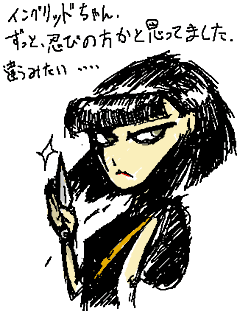
なん番組のキャラなんだかさっぱりわからなかった。この娘さんが主人公だとばかり思ってたけど、主人公はメガネハゲ坊主のほうらしい。
調べてみると、ちょっぴりつまらなそうな気配が・・・■
リロ＆スティッチばかり宣伝してて、こちらのシリーズにはなんの気配もないってことは、やっぱりアレなのかしらん。海外サイト調べても、イマイチ反響ないしなあ。
それにしても、ディズニーチャンネル公式サイトは最低すぎて頭くるな。Flashやめろ！番組表を見るのさえ苦痛な、このユーザービリティの悪さはなんなんだ。
あと、（これはCNでもそうだけど）、なんでPDFの番組表の文字をアウトライン化するかね？埋め込めばいいじゃん。なんのためのPDFなんだか。。。
それはともかく、Tara Strong のイングリッドちゃん目当てに見るとしよう。
無愛想そうで、いい感じだ。「あんたたちって、ホントに最低ね。生きてる価値ないわ」とか言ってくれるんでしょうか？ドキドキ。バブルスというよかレイヴン系のキャラ？
今日シンプソンズを見ていたら、「珍犬ハックル」が出てきた。いいのか？
凄いな、さすがシンプソンズ。タイムかなにかの表紙を飾るだけはある。
さらにぼっーとしてたら、キッズステーションで「エヴァンゲリオン」の最終回。
「みんな僕のことが嫌いなんだ～～～！！！」
と、叫ぶシンジくん。
そのとおりです。＞海外で嫌われるキャラって？
ぶっちぎりで嫌われてます。まあ、わからんでもないけど。
でもそれだけ、エヴァはメジャーってことでもある。
ちなみに好かれてるのは剣心。
これも同様にるろうに剣心が海外でどれだけメジャーであるかを物語ることでもある。
ざっと読んでみてもわかるだろうけど、カートゥーンネットワークの影響力がどれだけデカイかがよく分かる。海外においてカートゥーンネットワークで放送されるか否かで、日本のアニメ作品の認知度がめちゃめちゃ違ってくるようだ。
そういう意味では、「日本のアニメいらね」とか言われる日本CNは、海外支店の中でもかなり特殊なんだろうなあ。
上記サイトのトップはここなんだけど、もともとはそういうサイトではないのだが、ここのmisc（雑記）のコーナーがめちゃめちゃ面白い。いつのまにか「海外アニメフォーラムの翻訳紹介」になってしまってるのだが、それが最高。訳し方も雰囲気だしてていいし。
めちゃめちゃ分量あるんだけど、ゆっくりでいいから最初から読むことをオススメする。かなり興味深いよ。
海外のアニメマニアって、DVDにもなってない、まだ放送中の日本アニメのことまで、よく知ってたりするんだけど、その謎も解けるってもの。これを知ってから、BPS（バトルプログラマー・シラセ）（現在キッズステーションで放送中）の最終回のナレーションを聞くと感慨深いものがある。（30分バージョンになってるので、もしかしたらあの名セリフはカットされてるかも）
カットされてるかもしれないから、ここに書いとくかな
「今回でついに最終回。TVでお楽しみいただいてるみなさん。放映エリア以外で極めて特殊な方法でPCモニタ上などでご覧のみなさん。および海外で勝手に字幕をつけてご覧のみなさん。（以下略）」
ほら、そこ！ドキッとしない。
暗黒面の話はこのくらいにして、ともかく海外での日本アニメファンの感じ方がよくわかって面白い。まあ、こういうフォーラムに書き込むくらいだから、ちょっと偏ってる人たちなんだろうけど、それを差し引いても興味深い。
日本のファンサイトというと、批判厳禁みたいなとこがあるけど、あちらではフォーラム形式でこういう論議ができてるんだろうかなあ。うーん、違うか。総合系のフォーラムから拾ってきてるからこんな感じなのかも。なんにしても議論好きなのかな？と思ってみたけど。だってアチラのBBSのスタイルってこういうフォーラム形式が多いもの。日本人は匿名になって初めて、こういう議論ができるのかもしれません。「話」よりも「和」の国ですから。
こういう海外のアニメファン事情というのは、日本のアニメファンが読むより、日本のカートゥーンファンが読む方が面白いと思う。合わせ鏡をみているような錯覚を覚えないだろうか。
原語がどうだとか、リージョンがどうだとか、翻訳がどうとか、訛りはどーすんのかとか。
深読みしたり、その文化的背景を探ってみたり、ダジャレの意味をしらべてみたり、自国のアニメには無いモノがある！って言ってみたり（笑）。
なんか海を越えた別対象の話とは思えない。もしかしたら、この逆の日本のカートゥーンサイト・ウォッチャーとかいるんじゃないかと思うと、なんかドキドキ。
それにしても、さすがマニアはよく見てるよなあ。多分、自分よか日本アニメに詳しいし、見てると思う。あたりまえのように「もえたん」とか知ってるみたいだし。（自分は見たことないです）
そーいやムチャルーチャ始まったんだっけか。忘れてた。まあ、土曜もやるで、そのときにでも。
そうそう、米ワーナーが凄いですよ。
DVD出しまくりですよ。＞■
バットマンやらスーパーマンやら、しかもティーンタイタンズまで！ワンダーウーマンってなんだ？そんなのあったのか？時期未定のスーパーフレンスまで！
・・・・・って、あれ？なんか微妙。
まさか古いのばっかりじゃないでしょうね？
この手のアメコミヒーローものって、昔から散々アニメ化されてるから、「どの」時代のやつなのかはっきりしないと・・・ものすごくビミョーーー
ティーンタイタンズもねえ、あるんですよ。凄く昔のえらくかっちょ悪いやつが。
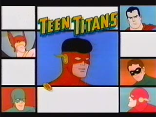
こーいうの・・・・（笑）
あ、ちなみに周りの人たちはTTじゃなくて、JLの方々ね。真ん中のキッドフラッシュがTT。
でもって、その敵となるお方は
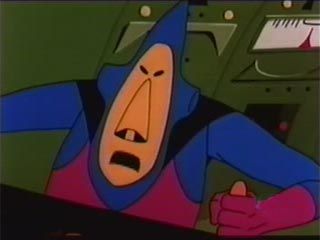
こちら。
めちゃくちゃ頭悪そう。
これ、ダレって言われてもワシもわかんない。
だ か ら ね。
みんなバカにするけど、宇宙怪人ゴーストは、この時代のものの中では、めちゃくちゃスタイリッシュでカッコよかったんだよ！！！！！！（悪役のデザインだって飛び抜けてクールだった）
Uバードは・・・・・・まあ、あれはなんだ、その、ごにょごにょ・・・
あ、でもカートゥーンカートゥーンズ系のDVDは出してくれないんですかワーナーさん。
なんでそこまで冷遇するんだよぉぉぉぉ。
せめてパワパフだけでも・・・
関係ないけど、最近キムポッシブルを英語音声で見てます。
ディズニーチャンネルってばチューナーもとから変えないと英語にならないので、気軽に原語聞けなかったんだよね。でも今はずっと英語。だいたい話はわかってるからいいもん。
オープニングの曲、日本語歌の中にも英語パートがあるんだけど、原語と微妙に違う！なんで？
別にそこまで、日本人に分かりやすい英語にしなくっても・・・・・（ディズニーだからか？）
でも、日本語版の歌、比べてみても、けっこういいねと思った。＞歌ってる人のサイト
ロンがキムのことをたまにK.Pと呼ぶのは、なんかイイ。
なんでこんなに寒いのよ。寒いのは苦手。でも寒い季節は飯がうまいから好き。この矛盾こそが人生。
土曜に吉祥寺のおもちゃ市にいってきたのよ。雪降ってんのよ。この時期に何事かと。さむ～。
もっとフリーマーケットみたいなものかと思ってたら、まあ、フリーマーケットみたいなものだったんだが、もっと投げ売り価格だと思ってた。値段はそーでもなかった。でも、掘り出し物がある気配はプンプン。モジョのチビフィギュアあったし。レンとスティンピーのコミックもあったし。でも結局なにも買わなかった。いや、別にここでなくてもいいかなって・・・寒いとテンションが上がりにくい。
むしろ、そこに貼ってある手作りポスターがよかった。
パワパフコミックを拡大カラーコピーしてコラージュしてるんだけど、あれはよかったなあ。フィルモイ絵のすばらしさを再認識。
それよりも、一緒に行った方々とのおしゃべりが楽しかったです。
いやーほんと喋ってるとあっという間ですよ。もりもり。
そこで、BBSにも何回か来てくれてるjacklinさんに初めてお会いしたんですが・・・スゲー！
最強のサムライジャック・マニア。いやもう凄すぎ。
よくコレクターは男性が多いとかいいますが、あれは嘘です。絶対うそ～～～。こと、こんなサイト初めてから見かけるコレクターは男女関係ありません。絶対関係ない。部屋の中すべてがカートゥーングッズやらパワパフグッズで埋まってるような人たちがゾロゾロ。みんな狂ってる！すばらしい！げふんげふん。
でまあ、その日はこんな感じ。＞■
えーフィクションです。フィクションですってば。多分・・
ああ、とうとうやっちまいました。
やっぱり言葉が通じなけりゃ態度で示すしかないものか。一方通行じゃ愛は伝わらんのですよ。
それはともかく、ジャイブから出ている
「バットマン：キリングジョーク」を買いました。ずーっと前に原書で読んだことはあったんだけど、セリフがわけわからんかったから、日本語訳はありがたいです。
本のタイトルこそ「キリングジョーク」だけど、これは正確には「アラン・ムーア」本。キリングジョーク自体は短いお話なんで、それだけじゃちょっと辛かったのかな。
それにしても、いいお値段ですなあ（3200円）。でも、アメコミの原書TPBを日本のコミックショップで買うと普通にこのくらいはするので、そんなに高いとは思わなかった。（麻痺してます）
ん～アレだね。アメコミ新潮と違って、この値段設定からしてジャイブは、はなからマニアにだけ売れればいいや、って戦略ですな。これはこれで正解って気もする。だからラインナップも通好み。
特に読みたくてもスクリプトが難解で読めないアメコミなどは、日本語訳が出ると助かるってものです。
まあなんにしても、この本は巻末の用語解説が一番のお薦めだけどね。アニメのJLにも出てきたたフランケンもどきのソロモン・グランディがそんなに古いキャラだとは思わなかったし。
あと、グリーンアローは元々バットマンと同じ大富豪だったんだけど、ヒーロー活動に専念しすぎて破産。その後はやさぐれ男として復活ってのも笑えた。アメリカでやるJLの新シリーズではグリーンアローも出るみたいだけど、バットマンにイヤミとか言ったりすんのかな？楽しみ。
それよか！ヘタレ小学館はなにやっとるんですか！
パワパフの日本語版コミックの4巻はまだですか！
くそまじめに順番にやらないでいいから、おもしろいのだけ集めた「よりぬき版」でいいからさあ。
そんときはまだ出てないけど＃50もぜひ納めて欲しいとこです。
そーいや、CartoonCartoonsのコミックTPBもとっくに出てるんだけど、買ってない。デクスターとかジョニーとかカーレッジとかが収録してるんだが・・なぜにSGC2Cは収録してないんですか。
きっといずれSGC2CのみのTPBが出るってことなんですな。それを楽しみに待つ。
ところで、パワパフムービーのディレクターズカット版が出るかもって話があるみたいですね。
もともと映画公開版にはカットされてたシーンがあるし、DVDのくせに画面だってトリミングされてる。でもむしろ、私としては新エピのDVD化が一番の希望ですけどねえ。できれば日本公開後に日本語版のやつで。ワーナーさんよろしく～。ハリポタが落ち着いてからでいいからさ。
ちがーう！セーラームーンじゃな～～～～～い！！！
太陽系10番目の惑星で連想することが、人によってわかれるようですなあ。（気になってあちこち回ってみた）
ちょっとした単語一つでその人のバックボーンがよくわかるってことだなあ。（ちなみに私のはこっちだ）
キン肉マンマニアは惑星バルカン（プラネットマン）を主張してるらしいが（笑）
とりあえず、セラムンとかトップとかを連想した人は佐賀県大和町にでも住みなさいってこった。（この町はいずれホニャララな人たちの注目を集めるんじゃないかと予想しているんだが、どうか。私は別にどーでもいいんだが）
NHK-BS版のティーンエイジ・ミュータント・ニンジャ・タートルズを見れたんですが、そんなに悪くないかも。テレ東版のタートルズが一番！とか思ってたけど、これもそこそこ。微妙に声優のグレードが上って気もしないでもないけど、それは今だから言えることかな？テレ東版も前半はこのくらいのノリだったし。20話過ぎたあたりから壊れてきたものなあ。後半は全然予告になってない、モノマネ大会とかあって楽しいんだよねえ。ああ、予告編こみでまた、テレ東版タートルズがまた見たいっ！（こればっか）
しかし、NHK版はタイトルからして「アイドル忍者 タートルズ」ってセンスがわけわからん。日本語のオープニング主題歌もアホだし。
なにより番組前にお姉さんが視聴者のハガキ読んだり、解説したりするんだけど、これがちょっぴりイタい。いや、それが逆にオモロなんだけど。
でも武器の解説が妙に正確で詳しかったりするとこがさすがNHK。
クランゲの声が低いのもそんなに悪くはなかった。（テレ東版はキンキン裏声）しかし、エイプリルが「富永みーな」ってのだけは、どうもイマイチ。かわいくて若すぎるんだよなあ。
ところで、今タートルズのファンってのはどの程度いるんだろうか？
それなりに人気はあったから、存在だけは多少知られてるとは思うけど、日本はサイクルが早いからなあ。
ちなみに、ミケランジェロを「ミケちゃん」という人は間違いなく地上波放送を見てた人ですね。
でもって、ミケランジェロを「マイキー」という人は多分かなりのマニアです。
マニアといえば、TBSでやってる「くりぃむしちゅーのヲタクイズ」は深夜帯だけに、マジもんでおもろいな。「エルティングビルへようこそ」のヲタクイズ合戦をそのままやってる番組。ドラえもんヲタ対決とかおもしろそう。
最近すっかりブログサイトになってしまってる亀吉さんのところで、ビックリしたことが。
げええ！マジですか！
でも間違ってるよ！その命名。10番惑星といったら
「魔王星ルシファー」でしょうが！
ああ、これが魔王星だったら、ついに恒星間航行時代の幕開けだったのに～！！
多分分かる人にしかわかんないネタだと思うけど、分かる人は激しく同意してくれると思うがいかに。
（まあ、こういうのはそっちのBBSで書くほうが管理人さんも喜ぶんだろうけど、はずしてもさびしいから）
そーいや、CS朝日でやってた21エモンをみると、もうとっくに宇宙港が出来てるはずなんだけどなあ・・・・おかしいなあ。
はあ、せめて軌道エレベーターは生きてるうちに見てみたい。
ところで、前に話題になったパワパフジュースを発見。どうやら最近輸入雑貨系のショップではいっぱい入荷されてるみたいですな。パワパフに限らず、いっぱいあった。
でも、結局買わなかったです。これがコンビニで見かけたらきっと買ってたんだろうけど、普通にあると・・・なんか・・・その。つくづくグッズ愛ないね、ワシ。
でも、かわりといっちゃなんだが、別のフィギュアを買った。
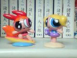
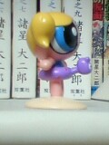
水着だし、バブルスの浮き輪がなんかヘンだったから。
しかし、あれですよ。こういう単体のやつじゃなくて、ビネットで出ませんかね、パワパフ。
ルーニートゥーンの食玩っていいよなあ、クオリティ高いし。ああいうレベルで欲しい。キャラ単体もそりゃかわいいけど、こう状景や物語が浮かぶそんなやつが欲しいのよ。ドラえもんのやつみたいな名場面シーンのやつで。
そんときは、
『色がなくなっちゃった！』 のパワパフバンド！
『おふろなんてキライ！』のガールズおふろセット！
『ねらわれた3人』のブリスターパック入りガールス！
『モジョはバブルス！？』のモジョバブルス＆半裸モジョ！
『勇気のおまじない』でのバタカ＆毛布セット！
『雨の日の冒険』のなりきりセット（博士付き）
あ、『カッコよくなりたい！』のやつも当然はずせないなあ。
そういう名場面（？）を再現したやつは出ないものか・・・もう、物語から分離して「キャラもの」になってしまった現在では無理かもなあ。
『キャンディ大好き！』とか『うそつきはダメよ！』もはずせない気が・・・
スーツ着脱可能のパワードスーツプリンセスとかも欲しいような・・・
AWSMデラックスキット（全ヒーロー付き会議場BOX）なんかも・・・、変形機構付き128箇所駆動型ダイナモとかも・・・
妄想が止まらないっ！
やっぱり、フィギュアも物語性が欲しい。だから私は物語性が分離してしまったグッズ系よか、物語が付随してくるコミックを優先的に買ってしまうのだろうか・・・
ビーストウォーズ メタルスが最終回。話数が足りなくてムリヤリ作った最終回。めちゃオモロ。
トランスフォーマー系はハマルとヤバそうなんで、極力調べたりしないように自分を制御してたんですが、あまりに無知だとトランスフォーマーマニアに怒られてばかりなので、ちょっとばかし調べてみることに。
スカポン太のTFレベルがすこし上がった。ぴろりろりーん。
でもまだ全然実感として把握できてません。
最近ちょうどこんな本が出てたみたいですね。これ読めばスキルアップするかな。
でもって、メタルスの続編、マシーンズってのがあるんですが、コレ、やるみたいですな！！！
PpGも流れるつう「東京国際アニメフェア2004」にてメタルスの続編「ビーストウォーズ・リターンズ」が先行上映。スタッフ再結集ってことだからあのマンマのノリなんでしょう。
なんだかモバイル放送っていう新しいメディアで流れるそうなんですが、CNでもやってくんないかな～。タカラのCM入ってもいいから。
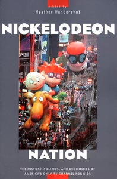
それはそうと、ニコロデオンの歴史？みたいなこんな本を買ってみたんですが、文字ばっかりではやくも挫折。レンとスティンピーで1章もうけてたりと興味深いんですが、絵がないのは辛い・・・
それにティーンエイジロボットやZIMのような新世代ニックアニメについても記述はないし。
ところで、表紙はあの有名なパレードの写真なんですが、ラグラッツはいいとしても、デクスター・・君なんでいるの？
CS で「アリーテ姫」ってのやってたので見た。
すっきりした絵なのにおっそろしくディティールが細かく、考証が緻密。かつものすごく繊細な演出。クオリティーもめちゃめちゃ高い。でも地味。もりあがりどころが無いうえに説教くさいのが鼻についた。あと主人公のアリーテ姫が塔の中で箱入り娘として育てられ、本ばっか読んでたせいか、妙に老成していて、ものすごくからみにくいキャラに。業界の評価は高そうだけど、一般受けはしなさそうな作品だなあと思った。
CNの4月の番組表も更新・・・・・
やはり、あそこは交代枠だったのですね・・・・・・
マンディ・・・・・・
ビリマンはまだ放送開始してから1年たってないじゃないですか・・・・
ちきしょう、デクスターはしぶとすぎるよ！（八つ当たり）
まあ、増えすぎたコンテンツと、これから増えるであろうコンテンツのことを考えると、どのみちこういう編成体制になるのは仕方がないとしてだ・・・・でもやっぱり寂しいのです。
気を取り直して他も見てみると、他のトレードはというと
ホムビ ＞ カウチキ ズガーン！！！！
スパマン ＞ JL まあ似たようなものか
ビッグオー ＞ ビヨンド ビヨンド復活？はっ！まさかビヨンド未公開エピを！！！！
・・・・告知ないからないんだろーなあ。
ホムビは一回潜ったら、復活した時には新作付きで来そうなんで、まあ少しの間の我慢って気がします。
toonami枠の今後の変遷が微妙に気になりますなあ。JLは5月もやることは決定済みなんで、あやういのは・・・サムライジャック？ビヨンドの帯はこのまま、Xエボとか新作なしのバットマンだとか、そんな感じの帯になりそうな予感。
ていうか、ハッキリ言えば、次消えそうなのはメタルスなんだな(笑)
そのメタルスといえば、今日で最終回？なの？
そうか次回が伝説のバナナだったんですな。
CNが正式に4月のスケジュール発表。
JLやカーレッジくん復活はいいのですが・・・それとナニがトレードされて消えてゆくのかが、激しく不安・・・
なんだかJLはスーパーマンとトレード。
そしてカーレッジは・・・ビリマンとトレードって気がしてしょうがないのですが・・・（時間帯があああ・・・おおおおお）
ところで、ビーストウォーズメタルスのさらに続編があるらしいのですが、やってくれたりはしないのかな？さらに暗い話になってるっていう話。地上波の続編は声優キャストの面からかなり辛いとは思うのですが。パワパフの新作日本公開が遅れてたのも、そのへんの理由が大とふんではいるんですけどね。（あとバットマンの未公開エピも～）
ところで、宇宙怪人ゴーストとUバードの復活まだ～。（多分日本で10人くらいの期待度）
ニックのOh Yeah! Cartoonを見たらミーナと伯爵がやってた。いつのまにか偶数番になってたんですな。Oh Yeah! Cartoonはなぜかエピソードが番号順に公開されないで、奇数番、偶数番といった感じにリピートされるのです。なぜかちゅうと、シリーズ化されたエピソードが連続していないで、隔回になってるからだと思われます。
でもって、この偶数番はティーンエイジロボットのパイロット版をやる流れなんですわ！
もし、ニックに入っていて、MLaaTRに興味ある方は要チェックですぞ。
あ、ミーナと伯爵もオススメです。
今日のミーナのセリフ。
「伯爵は私が一番好きよ！」 小悪魔・・・
土曜はものすごく情報量の多い日だったので、脳味噌が激しく断片化。そのせいか、帰ってすぐ眠くなって寝てしまいましたとさ。脳味噌が情報の最適化を要求したのでしょう。
ところで、夢って「必要な情報を再構築しようとして、その断片が浮かび上がる」説と「無用な情報を忘れようとして、その捨てようとした記憶が蘇る」説があるらしいのですが、どっちなんでしょうね。どちらにしても記憶の整理ってことらしいですが。なんにしても、このへんもパソコンといっしょで、無用なゴミファイルだとか、無用なレジストリ記録が意識下には残ってるのは間違いないと。
あー、それにしても土曜はかなり貴重な映像やら貴重な話やら、こってりもっさりでした。ただ、貴重であることと「おもしろい」「重要である」といったこととは必ずしも比例しないもので。トリビアじゃないけど、まさに人間とはムダ知識が増えることに喜びを感じる不思議な生き物だと実感いたしました。
あと、個人的にはミュータントタートルズ（テレ東版）の最終回やNHK-BS版のタートルズが見れたのが大収穫。改めて見ると、そこまでして見たかったほどのものか・・・と、ちょい頭傾けてたりもしたんですが・・・まあ、それもまた人間の業なんでしょうな。それで判明したんだけど、テレ東版タートルズの後番組ってエヴァンゲリオンだったのですな（ここ笑うトコ！）
でもけっこう象徴的な出来事だとも思った。まさにこれを境に日本の第２次アメコミブームは終演をむかえたのでした。
それにしても、スタートレックマニアとトランスフォーマーマニアは恐ろしいと思った。
「へえ、ビーストウォーズのフィギュアなんて出てたんですね」
「バカかてめえ、貴様が通ってたトライソフトにもっさりあっただろうが！」
「はは～、すみませぬ～。グッズ関係はスルーだったもので～」平謝り。
あんな複雑なギミックのオモチャなんて出てると思わなかった。
（実際すさまじく複雑だったらしい・・・）
まあなんちゅうか狭い領域でのファンてのはどうしても自力で情報やらをかき集めなければいけないせいか、濃くなってゆくのはしかたがないとはいえ、特にこの２つのマニアはドス濃い。でもってこの２つに手を染めてる人間は、終わってる・・・ともいえる。 なんちゅうかお金大丈夫でしょうか(笑)
こんなサイト始めてから濃い人たちと出会う機会が増えてきたような気がしないでもないです。
尋常でないくらいバカ映画を見てる人たちやら、尋常でない数のグッズの収集してる人たちやら、毎回あきれること感心することばかりです。
あ、私はそんな濃い人の話を聞いてるだけなんで、そんなに濃い人じゃないですよ～。
ようやっとサーバーが復帰した様子。もともとよくヘタるレンタルサーバーだったけど、今回のは長かったなあ。あいかわらずサポート掲示板ではノーコメントの知らん顔だったので、結構他の利用者たちがパニクッてました。登録抹消されたのかと思ったみたい。
その間私は、久々にお絵かき掲示板のお絵かきしたはいいが、投稿失敗して落ち込んでましたとさ。（キャプしとくの忘れた～～）
あと、DVDビデオの制作とかに挑戦してみたり。
ドライブにバンドルしてきてるツールで一通り出来るんでやってみたんですが・・・エンコードしたり、切った貼ったしたり、エンコードしたり、エンコードしたり、エンコードしたり・・・・
ひいい、やっぱ時間かかるのお。なかなか片手間にってわけにはいかんかったです。しかも最後にオーサリングしてやっと！かと思ったらアプリが落ちて失敗。ぐわあムカつくんじゃ！もう使いにくいうえに、低機能で、かつ時間ばっかかかる。やってられねー、とか思ってたんですが、バンドルツールを使うのをやめて、オンラインにちらばってるソフトに切り替えたら、めっちゃ快適！
最初からそうしときゃよかった・・・・
フリーなくせに高機能で欲しい機能はちゃんとある。なおかつ全然早いでやんの。しかも品質もいいときたもんだ。
TMPGEncってすばらしいね。
その絡みでDVDオーサリングツールにはTMPGEnc DVD Authorの試用版（30日フリー）を使ってみたんだけど、コレかなりいい。バンドルのやつがクソに見えてきた。今度もまた使う機会があったら買っちゃおうかな。
DVDがらみはほとんどwindowsで。Macだとこのへんのいい感じのツールがほとんどないのよ。うーむ。あってもOSX版のみ。ちょっと困りものだなあ。
それにつけてもパワパフですよ。
新作日本公開5月とにらんでるがどーよ。ちょっと裏技つかってみたけど、4月はまだっぽい感じだったので。ちなみに、5月にはJLの新作エピがくるみたい。こちらもスゲエ楽しみですたい。
はやり大きく飛ぶには一回深く屈む必要があるってことでしょーか。では、今沈んでるバットマンもきっと・・・・ドキドキ。
プリズナーNo.6目当てでみてるスーパーチャンネルなんですが、ぼーっと番組表みてたら、なんと3/11から「まんが宇宙大作戦」が始まるみたいですね。トレッキーじゃない私だけど、なんとなく気になる一品。
そーいえば、小学生のころ夏休みの読書感想文でジュブナイル版の「ドウエル教授の首」やら「宇宙大作戦」やら乱歩の「青銅の仮面」やらで書いて、教師を辟易させたのを思い出した。指定図書とか無視しまくってたからなあ。
今日はカチャーノフのミトンを映画館で見てきた。ようやっと見れたね！
トルンカの緻密さと比べるとゆるいんだけど、やっぱりカチャーノフは最高！そこがまた暖かみとなってジンとくる。悲しいからでもない、衝撃的だからでもない、でもなぜか目頭が熱くなってくる。
あれだ、いじらしさに、心がグッと締め付けられるといった感じだろうか。たかが人形なのに。
同時上映されてた他の作品も良かったなあ。特に登場する「ママ」たちがみんな松本零士の描く女性みたいで、そこも好み～～。
海外での連作PpGファンコミック。おもしれ～～。
なにげによく見る名前を発見して一人ニンマリ。Rabbitさんも参加されてますね。
「クレヨン 手裏剣の術～！」最高。
あっ！あのドットのインベーダーはATHFのキャラじゃないですか！（ここでも笑い）
今日は朝からのんびりTV三昧の日々でした。
だらーっとゴロゴロと受動的に、ひたすら怠惰に過ごしました。
ああ、なにもしないってのはなんて贅沢なことなんだ！
ドラ猫大将もドボチョンも見れたし、もちろんメタルスも。
録画しておいた「アードマンスタジオ作品集」もようやっと見れた。やっぱここのクレイアニメは凄いや。
それから、3月に開局したテレ朝チャンネル（3月は無料お試し期間）もまったりと見てました。
ここスゲエ！ 藤子アニメ見ほうだい！
とりあえず、「エスパー魔美」鑑賞。ええ、やっぱええ。てれぽーてーしょーん♪
ていうか、このへんのやつやってたころはTVとかあんまり見てない人だったので、ほとんど見てないんですよね。だから超ラッキー！（多分怪物くんがギリギリ）
さあこれから魔美はもちろん21エモンにチンプイもみるぞー！
そんなわけで、今日はひたすらなにもしないで過ごす！能動的なことはいっさいしない！
と、かたく誓っていたんですが・・・ネットは結局やってしまうのね。こんなの書いてるし。ネットジャンキーかしらん。
大百科やっぱり間に合わず。まあビデオにとっとけばいいって話なんですが、リアルタイムで見たいのよ。最近の気分として。とりあえず、今のこれを明日納めれば、仕事は一段落つく・・・はずなので、来週はなんとかなるでしょう。
今月のプレビューズを見てるんですが、今回はなかなかおもしろいね。
例えば、レンとスティンピーのミニバスト発売とか。
まずはスティンピーのDr.stupidからみたいだけど、今後もどんどん出てくるみたい。
http://www.palisadestoys.com/CC4_NEWSLETTER/REN_STIMPY/HoeckMB.jpg
http://www.palisadestoys.com/CC4_NEWSLETTER/REN_STIMPY/Madness.jpg
http://www.palisadestoys.com/CC4_NEWSLETTER/REN_STIMPY/Invention.jpg
いままでのおもちゃ的なものと違って、この手のは格段にクオリティが高いけど・・・・日本のアメトイ屋ではいくらくらいになるんだろうか。ミニバストとかは多分6～7千円くらいだろうけど、宇宙病のやつはとかは1万オーバーは確実。うぐぐぐぐ。
あとDark Horseからアニメ版SWクローン戦争のコミックが出るみたい。
96pもある大作。はっ！これはクローンのシャレか！！ってなんで日本語のダジャレになるんだか(笑)
他にもイロイロと気になるのはあるんですが、自分としてはやっぱコレですな。
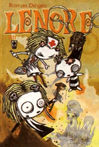
LENORE#11 ｷﾀ━━━━━━(ﾟ∀ﾟ)━━━━━━ !!!!
SLGなんて普通に待ってたら入荷してくれそうもないんで、速攻ブリスターに注文かけときましたよ。
ナース！！ナース！激しく楽しみ～～。
JTHMのリーフも再販されるみたい。TPB持ってるけど、カバーアートに釣られて買ってしましそう（汗）
そーいえば、Tシャツでこんなのも売ってました。
これ、Tシャツの図柄ね。アメリカのキモヲタどもがこれ着て日本を闊歩するつもりなんでしょーか？なんかすごくイタいです。うーむ、Geekには日本人の女の子ってモテモテなんだろうか。
やっぱりハンナ大百科まにあわんかった～～！
ドボチョンの女の子はミッチーという名だとわかったけど、結局またもや見れず。ああ、ミッチー。まあ、どうせ内容はどっかでみたスクービーな感じなんだろうけど、見れないとなると妙に気になる。
それよかドラ猫大将・・・談誌師匠の吹き替えぜひとも見たいのに・・・
でも、ビーストウォーズはバッチリですたい。
「バナナはどこだ？」
予告でのアレはいつものてきとうなアドリブかと思ったら、ホントにバナナを探す話だった・・・
しかも今回は原語音声なし！！！
日本のスタッフがフィルムつなぎ合わせて作ったトンデモないノリノリのお話でした。笑いすぎて苦しい。
オープニングとエンンディングも全員集合でコーラスしてるし。メチャメチャな回だなまったく。
今度こそ、今度こそ、仕事が一段落するはず！今度こそ・・・はやく区切りつけなきゃ、次の仕事がかぶってきて永遠にこんなこと言うはめになっちゃうよ。もう、いいかげんにしてっ！
なんだかムチャな生活しているわりには風邪もひかず、体だけは元気なのはなんでだろ～。
今日もハンナバーベラ大百科には間に合わなかった。メタルスには間に合ったけど。
わずかにドボチョンをちょこっとだけ見たけど、幽霊城とは別物なのね。
それよかドボチョンに出てた女の子が激しく気になる。なんか好みのデザインだ。明日こそは！
メタルスはコンボイがでっかくなってた。「どこが？」「全部！」
次回は噂の「バナナはどこだ？」みたいなんで凄く楽しみ。
デクスターも面白い。宇宙のハンターのモンキーが反撃するところはなんかプレデターみたいだった。そういやプレデターも「宇宙のハンター」だったっけ。プレデターで思い出したが、「プレデターVSエイリアン」の映画化の話はいったいどーなったんだろう。毎回噂が出てはポシャってる企画だが、やっぱり今回も？？
巨大ディーディーVSデクスターロボの回はなんかパワパフっぽかった。あ、某犬さんの好きな「耳に指」が！！
ゴレンジャーのポスターとか、耳潜行艇のサイコロ飾りとか、ウルヴァリンの首とか、どうもデクスターを見ていると細かいとこにばかり目がいきがち。今ひとつ素直に集中できない。これはそーいう作品なんだろうかね。
へんなメールがいっぱいくると思ったら、またウイルスが流行っているかららしい。
ネット環境の主はMacでやってるので、開きたくても開けない添付書類なんか怖くもなんともないんだが、うっとおしいことこのうえない。なんの対策もしてない人がいまだにいっぱいいるってことなんですな。
まあ、世の中そんなものだとちょっとあきらめぎみ。でも、CD焼くくらいで拘束しないで欲しいとは切に思う。（仕事の話・・・それすらできない＆やりたがらない＆はなから自分でやろうとしない人がいっぱいいるんですよ、世の中には・・・たのむよホンマ・・・SEとは雑用係とはよくいったものだ）
明日はガールズひな祭りスペシャルにビリマンのハロウィンですな。（もう今日だが）
忙しくてよくチェックしてなかったんですが、3月のカートゥーンカートゥーンはデクスター、ビリマン、パワパフの３連コンボですか。なんかすげえな。できれば、この３作品のクロスオーバーが見てみたい。
マンダーク、クリムゾンマン、ヘクター軍団、ナーゴルにモジョとカレを加えた悪役軍団に立ち向かうデクスター、グリム＆マンディそしてパワパフ。見てえ！
えへへ、だってこっちのほうがおもしろそうなんだもん！とか言っていつのまにか悪役側にいるビリー。
正義側の最終兵器はやっぱりディーディーでしょうか(笑)
ディーディーといえば、今やってるデクスターって第一シーズンのやつみたいですね。ああ、めちゃめちゃ面白いよ。実はあんまりデクスターって見てなかったんですが、しかもたまに目にするのはどうやら第三シーズンのものばっかりだったようで、本当のデクスターのおもしろさを分かっていなかったようだ。
なんかアニメもちょっとアナログがかってるとこもいい。ディーディーもこっちのほうが全然いいなあ。
とにかく、ひたすらギャグを詰め込むだけ詰め込んで、オチなんかどうでもいい、といったノリもまたよし。
でも気になるのが４月の編成。
カートゥーンカートゥーンの枠は作品数を少な目に絞って入れ替わりで放送するってパターンな気がするので、ジョニーのように次の入れ替わりって・・・・デクスターじゃないだろうか？いや、なんかパワパフは（ひいき目とか抜きに）ずっと居座るだろうから、そうすると・・・・
ところで、忙しい中実は毎回欠かさず見ていた番組がありまして。ビリマンでもパワパフでもなく・・・
ビーストウォーズ メタルス！
最近すっかりハマリぎみ。
ごっつんこー！
アホな吹き替えも最高だけど、なにげにストーリーはハードでおもしろい。タランスいいね～。
ジャガーさんカッコいいし。でもお亡くなりになっちゃったけど・・・
にゃかもりあきにゃ
には笑いましたよ。逮捕だにゃー！
物語はご先祖様登場でいよいよ佳境なんでしょうか？目が離せません。
ラットルにむかって「うるさいよおまえ」とつっこむコンボイにも笑い。
{kind=link}